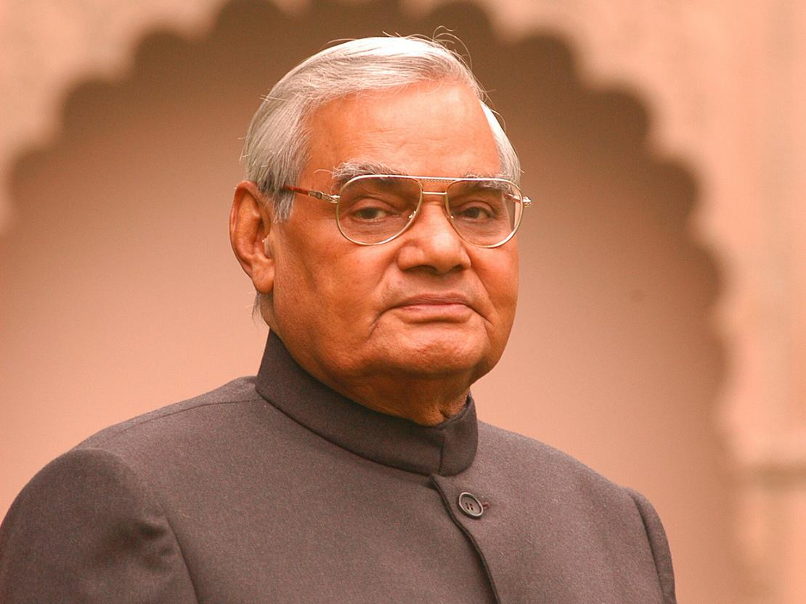

ATAL BIHARI VAJPAYEE

A Gentlemanly statesman and creator of modern India
- Born on 25th december 1924 in gwalior
- Joined RSS in 1939, became a Pracharak in 1947
- Remained a Bachelor for whole of his life, adopted the daughter of his close aide
- Came to politics as a freedom fighter, joined Bhartiya Jana Sangh
- Became the national secretary of BJS , incharge of northern territory
- Elected to Lok Sabha from Balrampur in 1957
- Became the National President of BJS in 1968
- Launched total Revolution movement against the emergency imposed by Indira Gandhi
- In 1977 merged with Janta party, forming a grand alliance against congress Govt.
- First person to give speech in hindi in UN assembly
- Formed BJP along with LK Advani and RSS supporters a strong critic of Congress
- Opposed Operation Blue star and Babri masjid Demolotion
- Won 1996 assembly election but failed to prove majority thus becoming shortes serving PM
- Became PM again in 1998 with NDA in power
- Conducted nuclear test in pokhran and launched delhi-lahore Bus service in 1999
- Became PM again in 1999-2004 thus become the first non congress PM
- Awarded Bharat Ratna in 2015
- Died in 2018 due to health problems